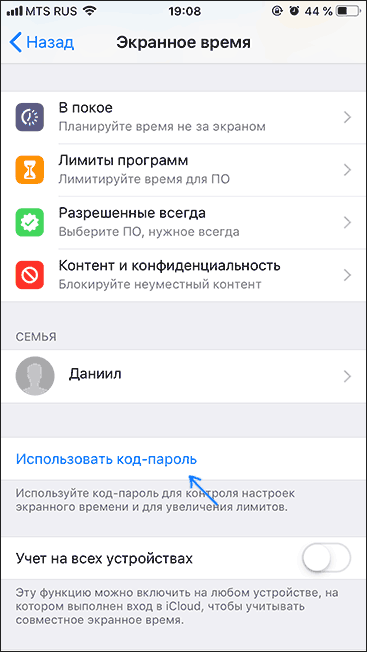
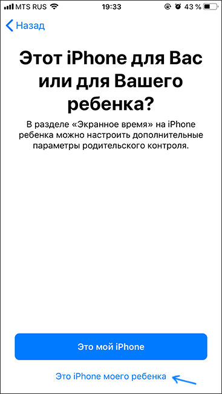
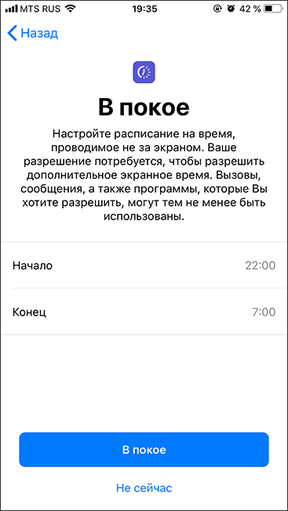
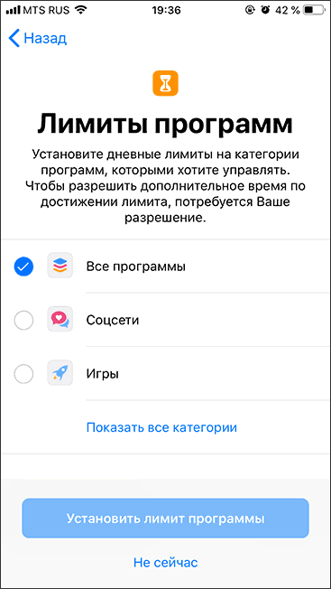
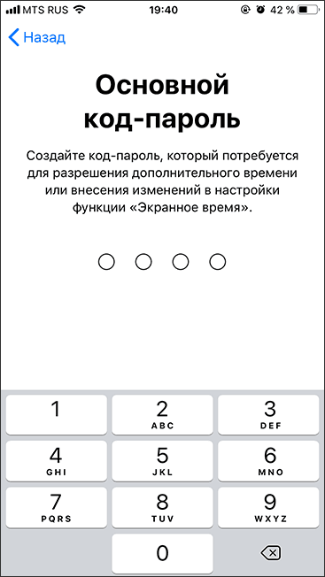
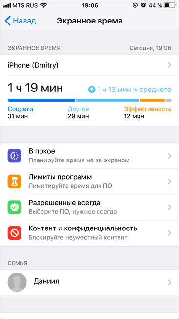
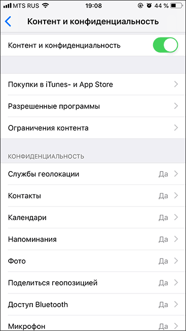
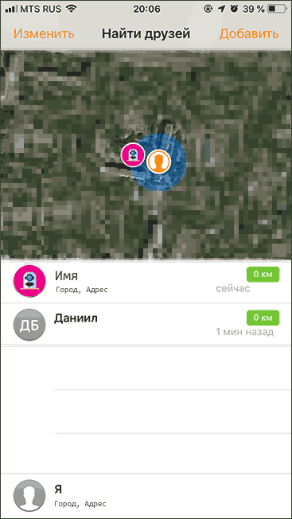
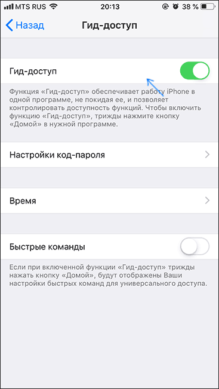

Родительский контроль на ios
Есть два подхода, к которым можно прибегнуть при настройке родительского контроля на iPhone и iPad:
Настройка всех ограничений на одном конкретном устройстве, т.е., к примеру, на iPhone ребёнка.
При наличии iPhone (iPad) не только у ребенка, но и у родителя, вы можете настроить семейный доступ (если ваш ребенок не старше 13 лет) и, помимо настройки родительского контроля на устройстве ребенка, иметь возможность включать и отключать ограничения, а также отслеживать действия удаленно со своего телефона или планшета.
Если вы только что купили устройство и на нем ещё не настроен Apple ID ребёнка, рекомендую сначала создать её со своего устройства в параметрах семейного доступа, а потом использовать для входа на новом iPhone (процесс создания описан во втором разделе инструкции). Если же устройство уже включено и на нем заведена учетная запись Apple ID, проще будет просто настроить ограничения сразу на устройстве.
Настройка ограничений на iPhone
Для настройки ограничений родительского контроля на iPhone, выполните следующие простые действия:
Зайдите в Настройки — Экранное время.

Если вы увидите кнопку «Включить экранное время», нажмите её (обычно функция включена по умолчанию). Если функция уже включена, рекомендую пролистать страницу вниз, нажать «Выключить Экранное время», а затем — снова «Включить экранное время» (это позволит настроить телефон как iPhone ребенка).
Если вы не станете выключать и снова включать «Экранное время», как описано во 2-м шаге, нажмите «Изменить код-пароль Экранного времени», задайте пароль для доступа к параметрам родительского контроля и перейдите к 8-му шагу.
Нажмите «Дальше», а затем выберите «Это iPhone моего ребенка». Все ограничения из шагов 5-7 можно будет настроить или изменить в любое время.
При желании, задайте время, когда можно пользоваться iPhone (звонки, сообщения, FaceTime и программы, которые вы разрешите отдельно, можно будет использовать и за пределами этого времени).
Если требуется, настроить ограничения на время использования определенных типов программ: отметьте категории, затем, ниже, в разделе «Количество времени» нажмите «Установить», задайте время, в течение которого можно пользоваться этим типом приложений и нажмите «Установить лимит программы».
Нажмите «Дальше» на экране «Контент и конфиденциальность», а затем задайте «Основной код-пароль», который будет запрашиваться для изменения этих настроек (не тот же самый, который ребенок использует для разблокировки устройства) и подтвердите его.
Вы окажетесь на странице настроек «Экранное время», где можно установить или изменить разрешения. Часть настроек — «В покое» (время, когда нельзя пользоваться приложениями, кроме звонков, сообщений и всегда разрешенных программ) и «Лимиты программ» (ограничение времени на использование приложений определенных категорий, например, можно установить ограничение на игры или соцсети) уже были описаны выше. Также здесь можно задать или изменить пароль на для установки ограничений.
Пункт «Разрешенные всегда» позволяет задать те приложения, которые можно использовать вне зависимости от установленных лимитов. Рекомендую добавить сюда всё то, что в теории может потребоваться ребёнку в экстренных ситуациях и то, что не имеет смысла ограничивать (Камера, Календарь, Заметки, Калькулятор, Напоминания и другие).
И, наконец, раздел «Контент и конфиденциальность» позволяет настроить более значительные и важные ограничения iOS 12 (те же самые, что присутствуют в iOS 11 в «Настройки» — «Основные» — «Ограничения»). Их опишу отдельно.
Доступные важные ограничения на iPhone в «Контент и конфиденциальность»
Для настройки дополнительных ограничений, зайдите в указанный раздел на вашем iPhone, а затем включите пункт «Контент и конфиденциальность», после этого вам будут доступны следующие важные параметры родительского контроля (я перечисляю не все, а лишь те, которые на мой взгляд наиболее востребованы):
Покупки в iTunes и App Store — здесь вы можете задать запрет на установку, удаление и использование встроенных покупок в приложениях.
В разделе «Разрешенные программы» вы можете запретить запуск отдельных встроенных приложений и функций iPhone (они полностью исчезнут из списка приложений, а в настройках станут недоступными). Например, можно отключить браузер Safari или AirDrop.
В разделе «Ограничения контента» вы можете запретить отображение в App Store, iTunes и Safari материалов, не подходящих для ребенка.
В разделе «Конфиденциальность» вы можете запретить вносить изменения в параметры геолокации, контактов (т.е. будет запрещено добавление и удаление контактов) и других системных приложений.
В разделе «Разрешить изменения» вы можете запретить изменения пароля (для разблокировки устройства), учетной записи (для невозможности смены Apple ID), параметров сотовых данных (для того, чтобы ребенок не мог включить или отключить интернет по мобильной сети — может пригодиться, если вы используете приложение «Найти друзей» для поиска местоположения ребенка»).
Также в разделе «Экранное время» настроек вы всегда можете просмотреть, как именно и в течение какого времени ребёнок использует свой iPhone или iPad.
Однако, это не все возможности установки ограничений на устройствах iOS.
Помимо описанных функций установки ограничений на использование iPhone (iPad) вы можете использовать следующие дополнительные средства:
Отслеживание местоположения ребёнка на iPhone — для этого служит встроенное приложение «Найти друзей». На устройстве ребенка откройте приложение, нажмите «Добавить» и отправьте приглашение на свой Apple ID, после чего вы сможете просматривать местоположение ребенка на своем телефоне в приложении «Найти друзей» (при условии, что его телефон подключен к Интернету, как настроить ограничение на отключение от сети описывалось выше).
Использование только одного приложения (Гид-доступ) — Если зайти в Настройки — Основные — Универсальный доступ и включить «Гид-доступ», а затем запустить какое-то приложение и быстро трижды нажать на кнопку Home (на iPhone X, XS и XR — кнопку справа), то можно будет ограничить использование iPhone только этим приложением, нажав «Начать» в правом верхнем углу. Выход из режима осуществляется при таком же трехкратном нажатии (при необходимости в параметрах Гид-доступа также можно задать пароль.
